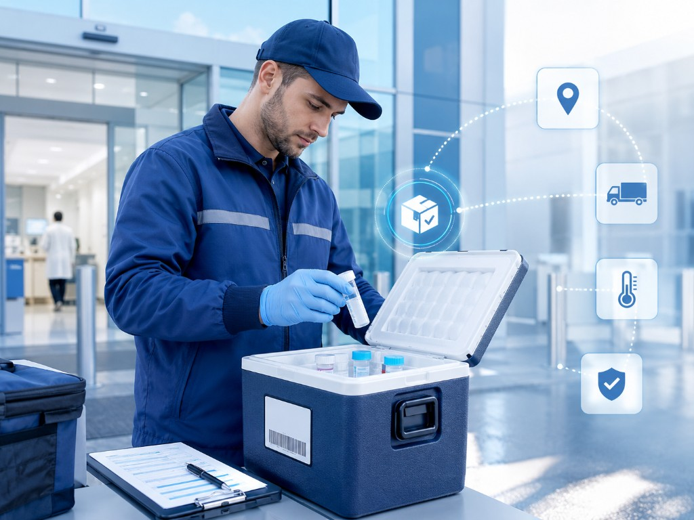
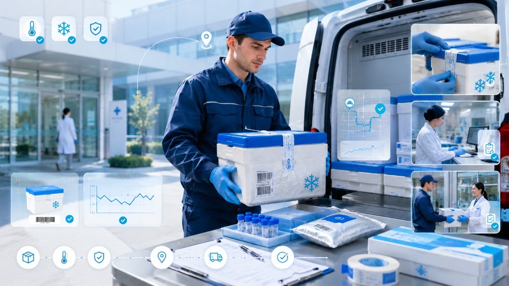
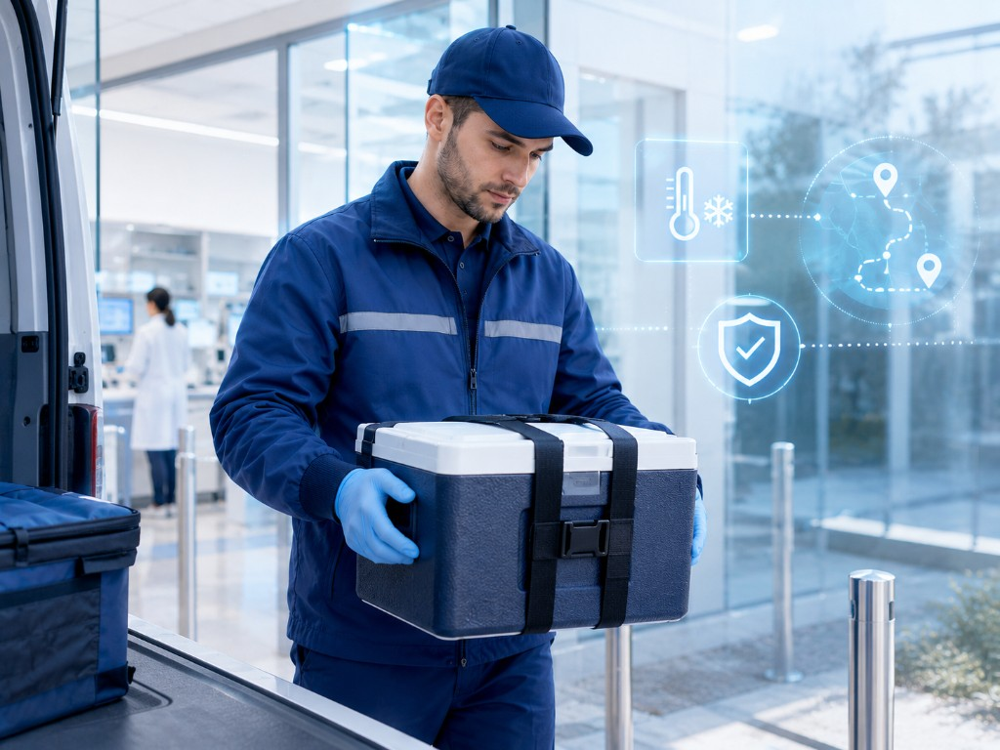
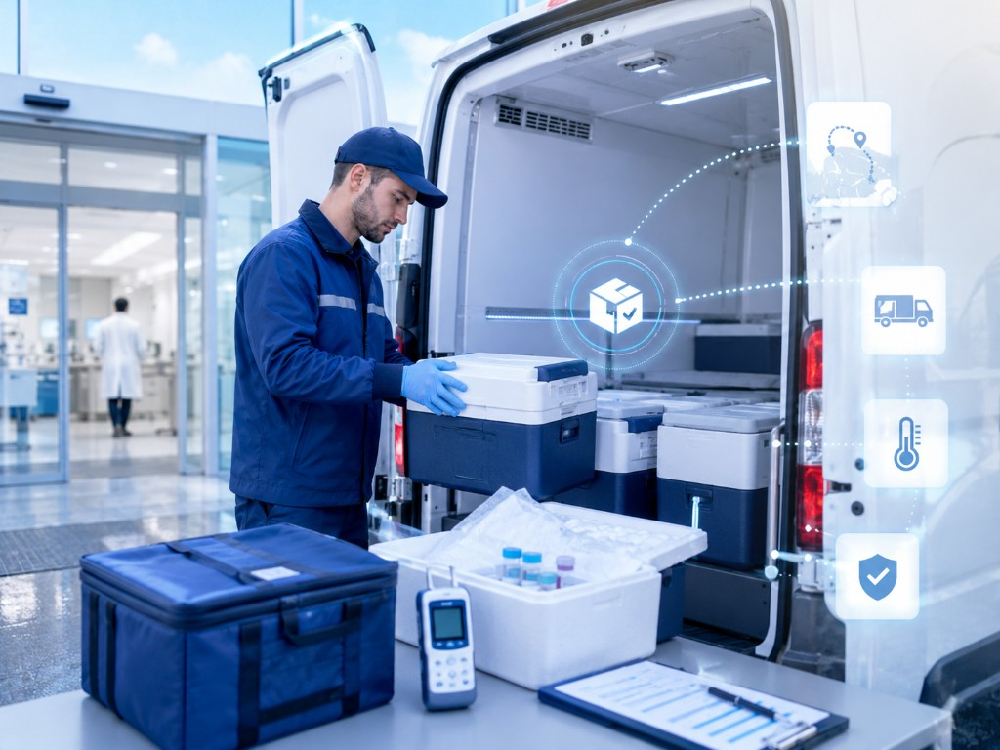
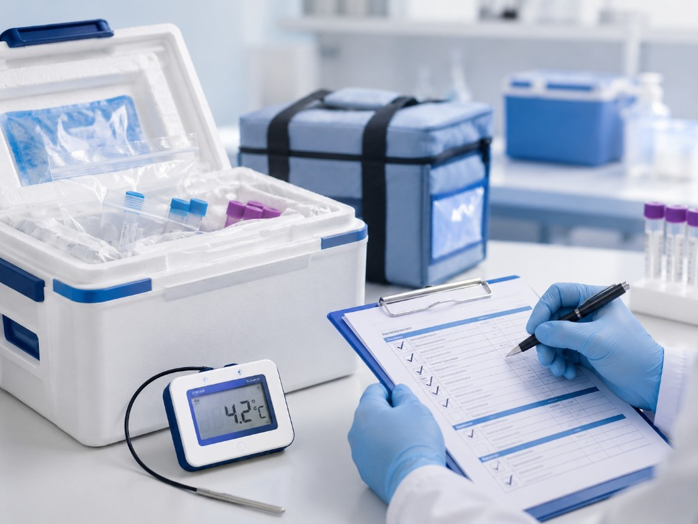
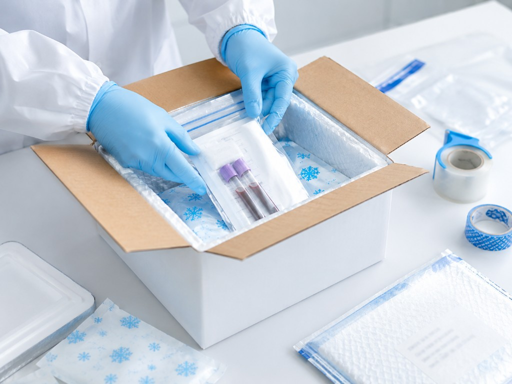
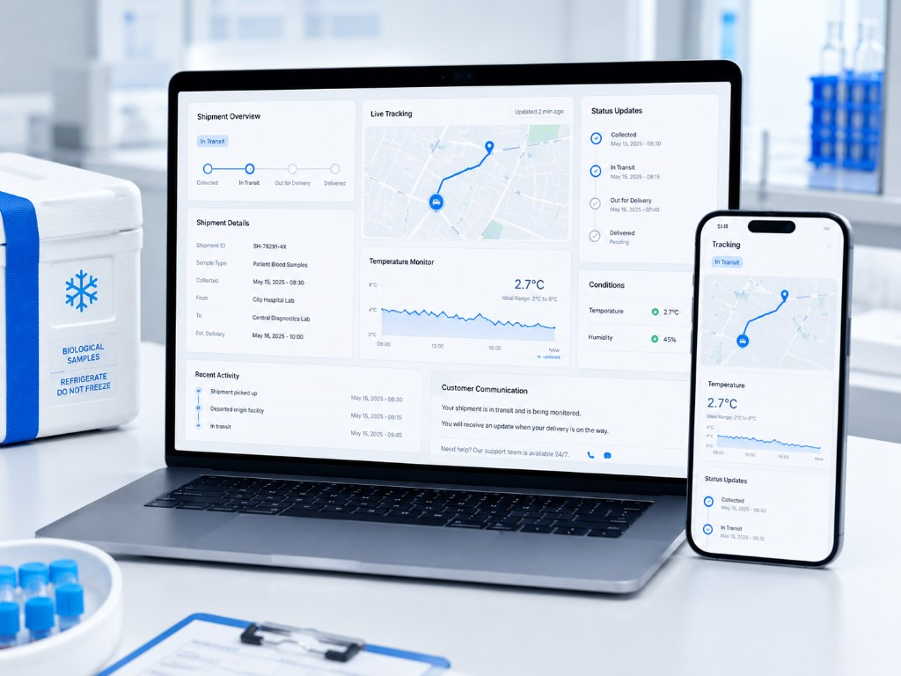
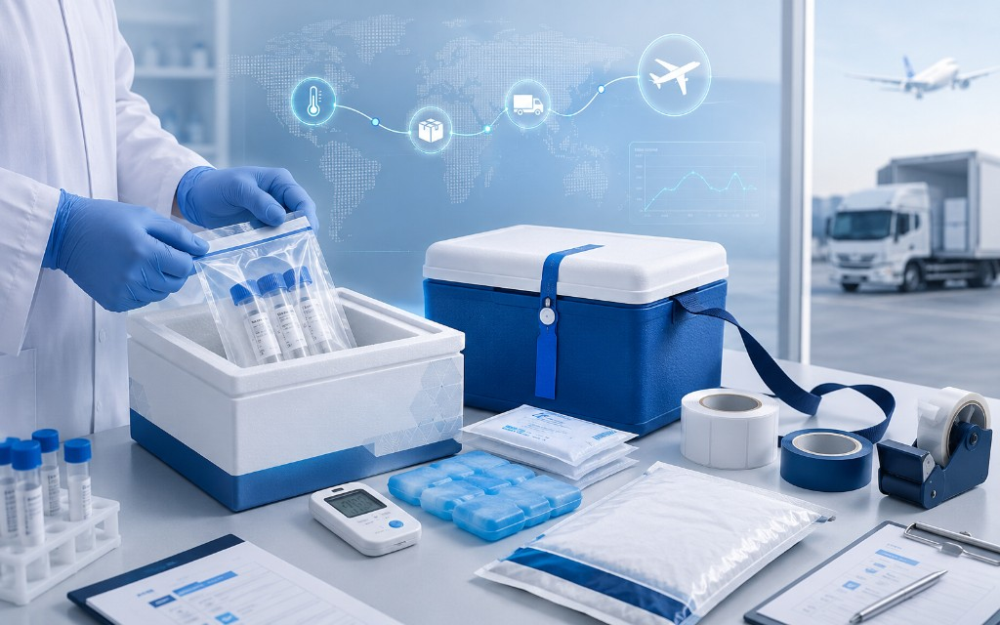
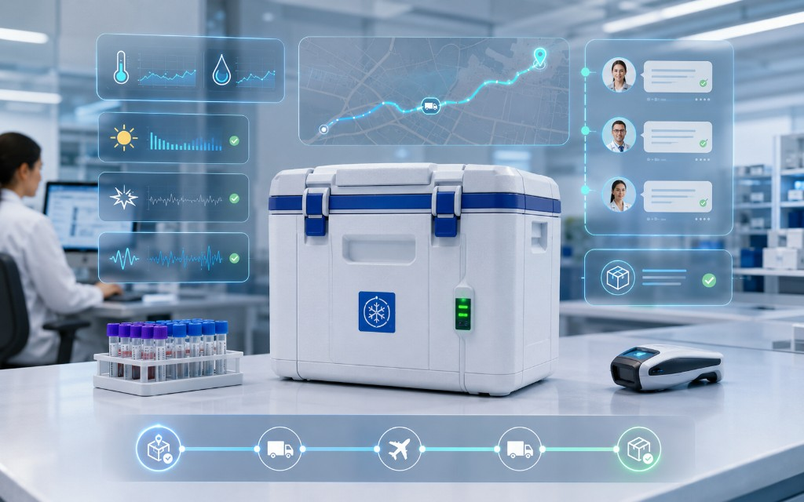

Clinical Sample Collection
Pickup and logistics support for clinical samples moving between healthcare providers, laboratories and receiving teams.
Sample collection logistics
Zoom Solutions supports healthcare sample collection with trained drivers, temperature-controlled handling, quality checks, packing, sealing, live monitoring and final delivery coordination.

Clinical and biological sample logistics
Clinical and biological samples require careful pickup, temperature awareness, proper packing, documentation, route planning and timely delivery. A small handling mistake can create risk for the sample, the test process or the receiving team.
Zoom Solutions supports sample collection logistics for healthcare, laboratory, pharma and life sciences customers that require a reliable controlled process from pickup to delivery.
Our process includes sample collection, temperature confirmation, quality check, packing, sealing, live tracking and proof of delivery.
Collection process
Our sample collection workflow is designed to support careful handling, shipment visibility and controlled movement for sensitive healthcare samples.
View Biological Substance HandlingService coverage
Zoom Solutions supports sample collection requirements that need professional handling, route planning, packaging coordination and reliable delivery.

Pickup and logistics support for clinical samples moving between healthcare providers, laboratories and receiving teams.

Controlled collection support for biological materials that require temperature-sensitive handling and careful movement.

Packing and dispatch support for samples requiring refrigerated or controlled room temperature logistics.
Final delivery coordination and confirmation to help complete the sample movement record.
Quality process
Sample logistics depends on careful preparation before the shipment leaves the collection point. Zoom Solutions focuses on temperature confirmation, packing readiness, sealing and documented handover.

Review collection details, temperature requirement and shipment readiness.

Prepare samples using suitable packing and sealing steps.

Monitor shipment movement and support customer communication.
Coordinate final handover and proof of delivery confirmation.
Temperature-sensitive handling

For samples and healthcare materials requiring refrigerated collection and dispatch support.

For sample shipments requiring stable controlled ambient movement.

For sample movements requiring route-specific packaging and handling review.
Packing and sealing
After collection and quality checks, the shipment can be packed and sealed according to the required temperature condition and transport plan.


Live visibility
Visibility helps customers understand shipment progress and supports faster communication if a sample movement needs attention.
Who we support
Collection support for samples requiring controlled pickup and reliable delivery coordination.
Sample logistics between collection points, testing facilities and receiving teams.
Temperature-sensitive sample logistics for clinical and pharmaceutical operations.
Controlled biological sample movement for research, clinical and life sciences requirements.
Before collection
Before sample collection, Zoom Solutions can review the shipment details needed to plan pickup, packing, monitoring and delivery.
FAQ
Clear answers for healthcare, laboratory, pharma and biotech teams planning sample pickup and delivery.
Zoom Solutions supports logistics for clinical samples, biological samples and temperature-sensitive healthcare materials, depending on route, temperature range and documentation requirements.
Yes. Temperature condition can be checked before packing, sealing and dispatch as part of the controlled sample logistics process.
Yes. Sample shipments can be monitored for temperature, location, light, shock and vibration depending on the required monitoring setup.
Yes. Final delivery can be coordinated with handover confirmation and proof of delivery support.
Request sample collection support
Share your pickup location, delivery destination, sample type, temperature range, collection time and delivery deadline. Our team can recommend the right collection, packing and monitoring setup.